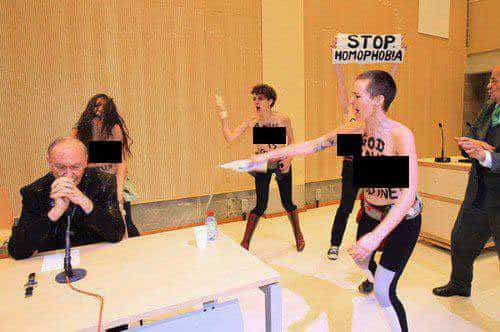

Corey is an iconoclast and the author of 'Man's Fight for Existence'. He believes that the key to life is for men to honour their primal nature. Visit his new website at primalexistence.com


There exists a noxious ideology with fanatical followers who use tactics of intimidation, manipulation, and outright violence to attack and suppress both men and women to further their quest for power and control. We are, of course, referring to the cancer that is feminism.
Much has already been said about the theory of feminism which owes its entire existence to lies, hypocrisy, and double-standards. And considering the audience here, we won’t go over those facts again. But what I do want to bring your attention to is how feminism operates in practice.
The plain matter of fact is that feminism is a terrorist movement and must be called out as such.
The FBI defines terrorism as, “the unlawful use of force or violence against persons or property to intimidate or coerce a government, the civilian population, or any segment thereof, in furtherance of political or social objectives.”
Compare that definition with the feminist terror tactics of the past and present:
As you can see, feminism almost fits the FBI definition above—almost, because of the word “unlawful.” The truth is that feminist terror tactics are largely tolerated and even sanctioned by the Western governments (as we shall see later), thus making much of their actions technically lawful.
Now, some of you may still have doubts that feminism could be identified as a terrorist movement (and I say movement as opposed to an ‘organization’ because calling them organized would be a joke). So, to better understand their terrorist nature, let us take a look at some of the similarities and differences between feminism and other terrorist groups.

First, the similarities:
As you can see, feminism is no different from many different types of terrorist organizations around the world—except in one special way: their modus operandi. You must understand that the feminist terror tactics we face today are not the same as the standard terror tactics that we are familiar with. Feminist terrorism contrasts itself through its feminine nature compared to the conventional, masculine form of terrorism.
To understand, think about differences between male aggression and female aggression. When men decide to be aggressive, they are explicit in their expression. They will threaten you with direct violence and act on it if necessary. Females, on the other hand, express their aggression in a much different way. Women too will use threats and resort to physical violence just as much as men (if not more), but only if they know they could get away with it. But that’s not the end of it. Women usually don’t like to engage in violence themselves, for their choice of weapon is the indirect, social aggression. Women prefer to spread rumours, manipulate others, and get other men to do their dirty work for them. Unlike the direct, physical violence that the average men engage in, they are much more Machiavellian with their attacks.
This, in essence, is the primary difference between the terrorist attacks that we see on the news and the hidden and sinister terror tactics of feminism that go largely unnoticed. Just as boys getting in a playful scuffle at school will face consequences while girls who bully another girl to suicide by spreading rumours go unpunished, we live in a society that completely represses even a hint of masculinity while feminists get a free reign with their attack on men.
If you observe carefully, feminism operates in the same fashion as the individual female aggression mentioned above: by spreading rumours (“The Patriarchy,” “rape culture,” false accusations, etc.), manipulating others (painting themselves as victims for privileges while manipulating the legal system to their favour), and by getting other men to do their dirty work for them (by using the government and white knights as their muscles in their war against men).
And if they can get away with it, they will not hesitate to inflict physical violence on men as we have seen with the countless examples of women who have gotten away with things men would be punished for:
Remember that even if these women don’t identify themselves as feminists, they are engaging in feminist terrorism all thanks to our feminist culture that condones their actions. Every time a man gets away from a false rape accusation, feminists screech and squeal about rape culture, but you’ll never hear a peep from them if you mention female violence against men—let alone being able to get away with it without legal consequences. In fact, they’ll just think it’s funny and laugh.
And what are the results like for these two different tactics?
They don’t even hide the fact that the goal of FemTerror is for men to live in fear.
The difference in their levels of success speak for themselves.
Although causing much death and suffering, conventional terror tactics rarely accomplish anything more than spreading acute fear. They may provoke conflicts, but they do nothing to further the aims of the groups that instigate the violence: The IRA couldn’t get the British out of Northern Ireland, Timothy McVeigh couldn’t stop the federal government from growing even bigger, and Islamic terror attacks in Europe have done nothing but inspire even more disdain for Islam.
Feminist terror tactics, on the other hand, have been devastatingly effective. In the course of just few decades, feminists have:
In short, although feminism lacks the overt violence of conventional terrorism, it has been wildly successful with their feminine form of terror in spreading culture of fear for men while completely changing the society to kowtow to their twisted demands. They have effectively created a society where they can live in privileged conditions with weak men existing only as drones to serve their needs. So, who needs bombs when divorce-raped men are committing suicide in droves?
With all that said, I think we can safely declare the degradation of Western societies by the feminists as the most successful terrorist campaign in history.
Now, if they managed to make it this far, the feminists reading this will protest that it’s only the “radical” feminists who are engaging in this so-called feminist terrorism, and that those feminists don’t represent the movement as a whole. They’ll claim that they’re the real feminists who truly want equality.
I’ve seen this many times before and this is nothing but the overused “Good Cop, Bad Cop” strategy.
The truth is that these “moderate” feminists and the radical feminists are working together as one whether they know it or not.
How it works is, the radical feminists act as the “bad cop” by using terror tactics to threaten and attack men, only to scurry and hide behind the moderate feminists to cry misogyny when faced with a backlash. The “moderate” feminists, on the other hand, play the “good cop” by appearing as the reasonable and sane alternative to the radical feminists. However, you’ll never see them raise an issue with the radical feminists because they implicitly understand that they need each other. The moderates need the radicals to attack men and put pressure on institutions, and they will only superficially distance themselves from the radicals to feign innocence when feminism as a whole is criticized for its terror tactics.
And, as we at ROK already know, even though they may not be as over-the-top and violent as the radicals, there is nothing normal or good about the sick ideology that these moderates are espousing. Their joint tactic, however, works well to sell the big fat lie of “equality” to the general public full of naive men and women.
All feminists, whether they be “radical” or “moderate,” are part of the same terrorist campaign against men or at least complicit in its efforts.
To be fair, there are some individual feminists who do advocate for actual gender equality (I saw one men’s rights group in Toronto organized by a woman), but these women are few and rare and are immediately attacked by the rest of the feminists for heresy. It just goes to show what kind of movement feminism really is.
Like ISIS, feminists are not squeamish about telling everyone exactly what they will do.
Last, the most important aspect of feminism is that feminism is a state-sponsored terrorism.
In spite of all their obscene barking and threats of rape and violence, the feminists in reality are utter cowards who are only able to harass and assault ordinary men because they know they have the backings of powerful men at the top—the same men who keep them in a long enough leash to attack men like you and me, but not long enough to threaten their own power.
Our governments—along with the media, corporations, and educational institutions—are actively collaborating with the feminists in their war against men. For all the bitching they do about men and “patriarchal” governments, their entire terrorist movement depends on professional white knights to jump into their defense and for billionaire elites like George Soros to fund their cause.
And it doesn’t stop there.
The media, owned by powerful men, have defamed us as “pro-rape” and instigated a violent mob against us just for trying to organize an apolitical social happy hour, while social media outlets like Twitter and Facebook—founded and run by men—are also stepping up in their efforts to censor anyone critical of the feminist agenda (while allowing hashtags like #killallmen seen above). Twitter recently hired a feminist and professional victim, Anita Sarkeesian, as the head of their Trust and Safety Council for this purpose. College campus rape hysteria and kangaroo court trials are already well known, and Western governments have already taken the cue to start passing draconian laws to punish young men. Even sports and entertainment industry is on board with the feminist assault on men. This is an all-out war by our overlords to subjugate us, and the feminists are merely their useful idiots.
Why all this effort against men?
Strong, masculine men who think for themselves are the greatest threat to the globalist agenda, which seeks to turn the human race into a single mass of passive, consumerist slaves. And because masculinity, nuclear families, traditional values, and cultural identity are things that men value that get in the way of their plans, they will do everything they can to emasculate us, shame us, and control us. This is also why they are aggressively pushing homosexuality, multiculturalism, and mind-numbing technological devices into our societies to fragment us and weaken us.
As a movement that constantly threatens our existence, feminism needs to be exterminated. But trying to fight the feminists themselves is a waste of time. We can spend the rest of our lives debating, mocking, and attacking these rabid feminists and it wouldn’t make any worldly difference. In fact, conflict and drama is exactly what they crave so that they can continue playing victims and go cry to the government to beg for harsher measures against men. Battling the feminists themselves without taking the state into account is like trying to fight smoke instead of dousing the flame that is causing it.
To defeat feminism, we must destroy the system that supports it. The fate of mankind depends on our resistance.
 If you like this article and are concerned about the future of the Western world, check out Roosh's book Free Speech Isn't Free. It gives an inside look to how the globalist establishment is attempting to marginalize masculine men with a leftist agenda that promotes censorship, feminism, and sterility. It also shares key knowledge and tools that you can use to defend yourself against social justice attacks. Click here to learn more about the book. Your support will help maintain our operation.
If you like this article and are concerned about the future of the Western world, check out Roosh's book Free Speech Isn't Free. It gives an inside look to how the globalist establishment is attempting to marginalize masculine men with a leftist agenda that promotes censorship, feminism, and sterility. It also shares key knowledge and tools that you can use to defend yourself against social justice attacks. Click here to learn more about the book. Your support will help maintain our operation.
{kind=link}